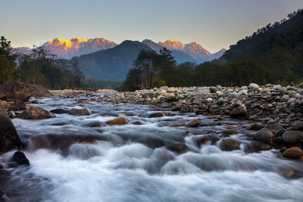

KACHIN STATE
Kachin State is a beautiful state located northern of Myanmar and is adorned by the king of mountains, the Himalayas. Hkakabo Razi, the highest peak of Myanmar is also located here. Kachin is also home to the largest inland lake of Southeast Asia – Indawgyi Lake and the birthplace of Ayeyarwady River. The lush green farmlands on the banks of the river interspersed with snow-capped peaks present a postcard-perfect scene for visitors to admire. The state is also famous for the abundance of jade and gold.
Popular Places

|
Myitkyina Myitkyina is the capital state of Kachin State and is renowned for its cultural, religious and ethnic diversity, attractive riverside or surrounds areas. A short drive from Myitkina takes a visitor to Myitsone, the largest inland lake of Southeast Asia. Myitkina has a lovely riverfront where a local market is operated regularly. A large standing and reclining Buddha image also adorn the river bank. |
|---|
Myit Sone A journey of 45 kilometres to the north of Myitkina takes a visitor to Myitsone, the scenic confluence of the Mayhka and the Malikha rivers which join to form the Ayeyarwady river. The journey takes about one and a half hours and the road passes through breathtakingly scenic parts of Myanmar. |
|---|
|  | Putao Tourists looking forward to viewing some snow-capped peaks need to visit Putao, a quaint town nestled in the lap of the Himalayas. The town has a cold climate throughout the year and is characterised by people from a variety of ethnic backgrounds who are warm to tourists. Visitors will be able to see a number of flora and fauna here, especially rare species. |
|---|
Shwe Mitzu pagoda Shwe Mitzu pagoda is an enchanting pagoda located on the west bank of the Inndawgyi lake. The pagoda consists of terraces, each of which is adorned with stone statues. |
|---|